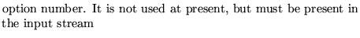
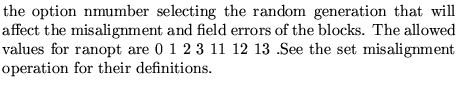
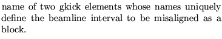
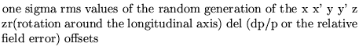

A block is defined by indicating the names of its first and last element. Any subset of the lattice beginning and ending with these two names will be considered a a block of the same family and subjected to the same rms errors (not necessarily the same error values).
The line may contain up to mxbloc block families (initially set at 100). A family may contain as many blocks as needed.(there is no built in limit)
Blocks may be nested. An inside block must be closed before the outside block can be closed. Up to ten levels of nesting are allowed.
The present implementation is correct only for straight blocks or blocks with small bend angles : less than .1 radian)
Input formatParameter definitions
BLOCk misalignement...........(maximum 80 characters)
nopt ranopt
Name1 name2 dx dx' dy dy' dz dzr ddel
.....................
Name1 name2 dx dx' dy dy' dz dzr ddel
99,
nopt 
ranopt 
name1 name2 
dx dx' dy dy' dz dzr ddel
